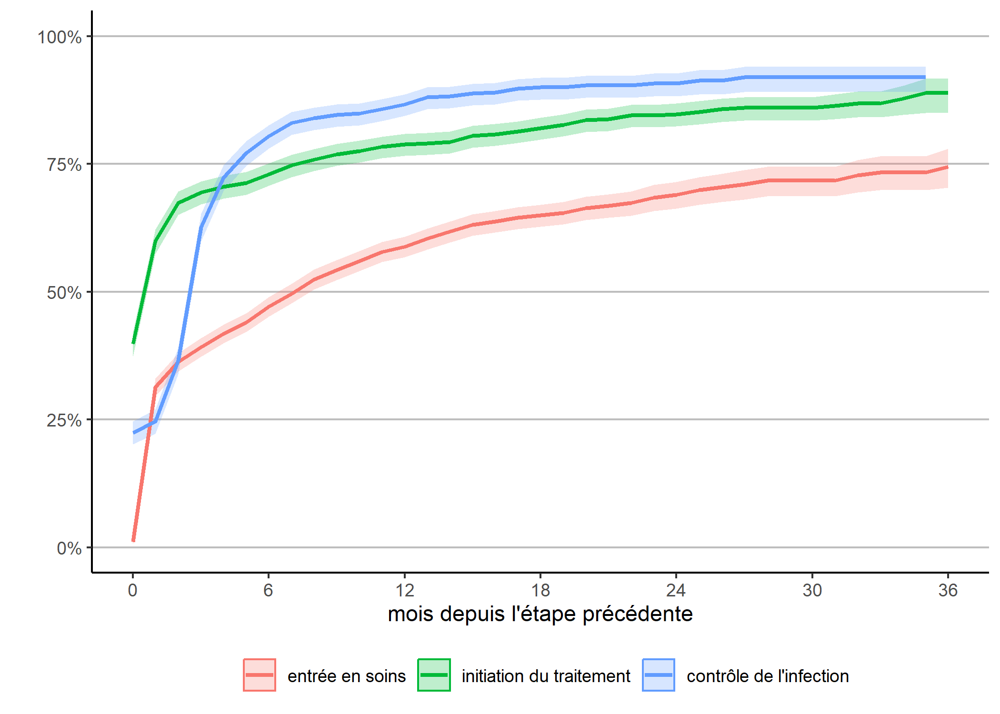
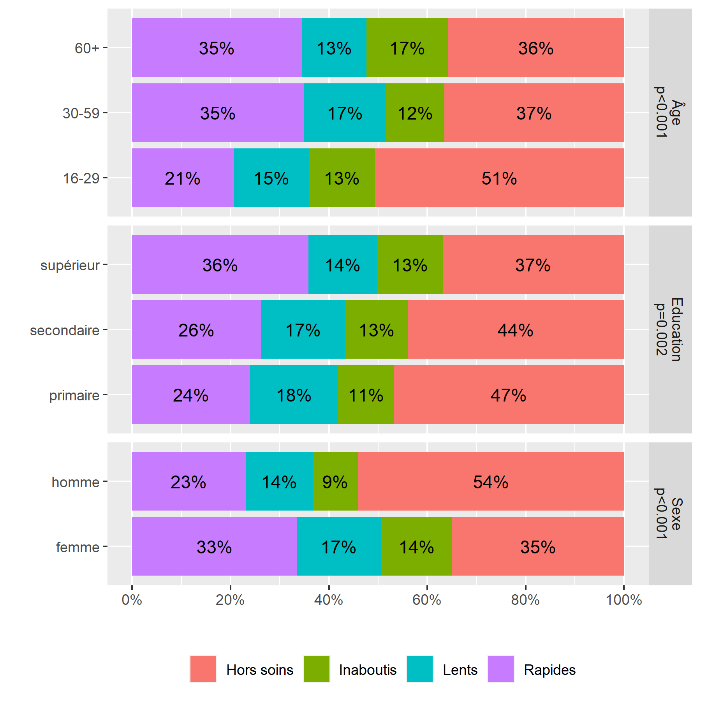
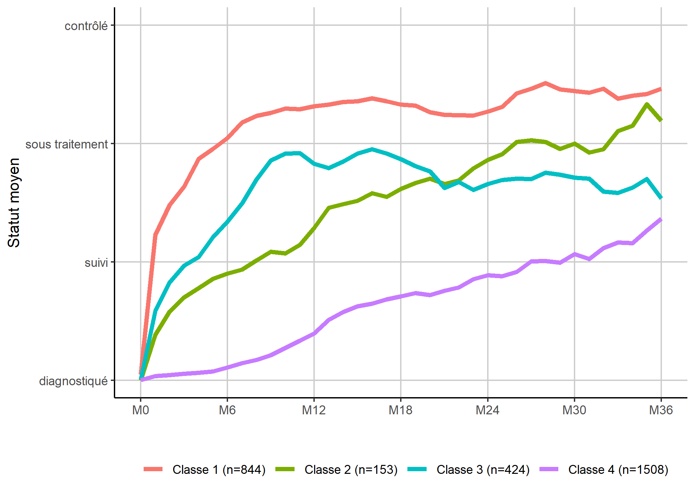

Trajectoires de soins : un exemple de données longitudinales
- Première description des données
- Évolution de la cascade de soins au cours du temps
- Analyse de survie classique
- Une première analyse de séquences sur l’ensemble du fichier
- Une seconde analyse de séquences limitées aux 18 premiers mois
- Facteurs associés à l’appartenance à chaque groupe
- Modèle mixte à classes latentes
- Modèle à observations répétées
- Modèle de survie multi-états
Dans ce chapitre, nous allons aborder plusieurs méthodes d’analyse à partir d’un jeu de données longitudinales. Tout d’abord, importons les données dans R avec la commande suivante :
[1] "data.table" "data.frame"Nous obtenons un objet appelé care_trajectories. La fonction class nous montre qu’il s’agit d’un tableau de données au format data.table (voir le chapitre dédié). Chargeons donc cette extension ainsi que le tidyverse.
Première description des données
Jetons un premier regard aux données.
| id | month | care_status | sex | age | education | wealth | distance_clinic |
|---|---|---|---|---|---|---|---|
| 3 | 0 | D | 1 | 1 | 2 | 2 | 1 |
| 3 | 1 | D | 1 | 1 | 2 | 2 | 1 |
| 3 | 2 | D | 1 | 1 | 2 | 2 | 1 |
| 3 | 3 | D | 1 | 1 | 2 | 2 | 1 |
| 3 | 4 | D | 1 | 1 | 2 | 2 | 1 |
| 3 | 5 | D | 1 | 1 | 2 | 2 | 1 |
Il apparaît que les données sont dans un format long
et tidy (voir le chapitre sur tidyr pour une présentation du concept de tidy data), avec une ligne par individu et par pas de temps. Il apparait également que les données sont stockées sous formes de vecteurs labellisés (voir le chapitre dédié aux vecteurs labellisés). Nous aurons donc besoin de l’extension labelled.
Pour une description des variables, on pourra avoir recours à describe de questionr.
[49365 obs. x 8 variables] data.table data.frame
$id: patient identifier
integer: 3 3 3 3 3 3 9 9 13 13 ...
min: 3 - max: 9998 - NAs: 0 (0%) - 2929 unique values
$month: month(s) since diagnosis
numeric: 0 1 2 3 4 5 0 1 0 1 ...
min: 0 - max: 50 - NAs: 0 (0%) - 51 unique values
$care_status: care status
labelled character: "D" "D" "D" "D" "D" "D" "D" "D" "D" "D" ...
NAs: 0 (0%) - 4 unique values
4 value labels: [D] diagnosed, but not in care [C] in care, but not on treatment [T] on treatment, but infection not suppressed [S] on treatment and suppressed infection
n %
[D] diagnosed, but not in care 25374 51.4
[C] in care, but not on treatment 5886 11.9
[T] on treatment, but infection not suppressed 4596 9.3
[S] on treatment and suppressed infection 13509 27.4
Total 49365 100.0
$sex: sex
labelled double: 1 1 1 1 1 1 1 1 0 0 ...
min: 0 - max: 1 - NAs: 0 (0%) - 2 unique values
2 value labels: [0] male [1] female
n %
[0] male 17781 36
[1] female 31584 64
Total 49365 100
$age: age group
labelled double: 1 1 1 1 1 1 2 2 2 2 ...
min: 1 - max: 3 - NAs: 0 (0%) - 3 unique values
3 value labels: [1] 16-29 [2] 30-59 [3] 60+
n %
[1] 16-29 16911 34.3
[2] 30-59 29365 59.5
[3] 60+ 3089 6.3
Total 49365 100.0
$education: education level
labelled double: 2 2 2 2 2 2 3 3 2 2 ...
min: 1 - max: 3 - NAs: 0 (0%) - 3 unique values
3 value labels: [1] primary [2] secondary [3] higher
n %
[1] primary 10417 21.1
[2] secondary 19024 38.5
[3] higher 19924 40.4
Total 49365 100.0
$wealth: wealth group (assets score)
labelled double: 2 2 2 2 2 2 2 2 1 1 ...
min: 1 - max: 3 - NAs: 0 (0%) - 3 unique values
3 value labels: [1] low [2] middle [3] high
n %
[1] low 15432 31.3
[2] middle 20769 42.1
[3] high 13164 26.7
Total 49365 100.0
$distance_clinic: distance to nearest clinic
labelled double: 1 1 1 1 1 1 2 2 2 2 ...
min: 1 - max: 2 - NAs: 0 (0%) - 2 unique values
2 value labels: [1] less than 10 km [2] 10 km or more
n %
[1] less than 10 km 26804 54.3
[2] 10 km or more 22561 45.7
Total 49365 100.0Dans cette étude, on a suivi des patients à partir du moment où ils ont été diagnostiqués pour une pathologie grave et chronique et on a suivi leurs parcours de soins chaque mois à partir du diagnostic. La variable status contient le statut dans les soins de chaque individu pour chaque mois de suivi :
- D : s’il n’est pas actuellement suivi dans une clinique, soit que la personne n’est pas encore entrée en clinique après le diagnostic, soit qu’elle a quitté la clinique et qu’elle est donc sortie des soins ;
- C : indique que le patient est entré en soins (il est suivi dans une clinique) mais il n’a pas encore commencé le traitement, ou bien il a arrêté le traitement mais est toujours suivi en clinique ;
- T : la personne est sous traitement mais l’infections n’est pas
supprimée
oucontrôlée
, soit que le traitement n’a pas encore eu le temps de faire effet, soit qu’il n’est plus efficace ; - S : la personne est suivie en clinique, sous traitement et son infection est
supprimée
/contrôlée
, indiquant que le traitement est efficace et produit son effet. Cette étape ultime du parcours de soins est celle dans laquelle on souhaite maintenir les individus le plus longtemps possible.
Il est important de noter que nous avons ici des statuts hiérarchiquement ordonnés (D < C < T < S), ce qui aura son importance pour les choix méthodologiques que nous aurons à faire.
Nous disposons également d’autres variables (âge, sexe, niveau d’éducation…) qui sont ici dépendantes du temps, c’est-à-dire que le cas échéant, elles peuvent varier d’un mois à l’autre en cas de changement.
Avant de démarrer les analyses, françisons certaines de ces variables.
var_label(care_trajectories$sex) <- "Sexe"
val_labels(care_trajectories$sex) <- c(homme = 0, femme = 1)
var_label(care_trajectories$age) <- "Âge"
var_label(care_trajectories$education) <- "Education"
val_labels(care_trajectories$education) <- c(
primaire = 1,
secondaire = 2,
supérieur = 3
)Le fichier contient 49 365 lignes, ce qui ne veut pas dire qu’il y a ce nombre d’invidus suivis au cours du temps, puisque plusieurs lignes correspondent à un même individu. On peut obtenir le nombre d’individus différents assez facilement avec la commande :
[1] 2929Précision : dans ce fichier, tous les individus ne sont pas suivis pendant la même durée, car ils n’ont pas tous été diagnostiqués au même moment. Cependant, il n’y a pas de trous
dans le suivi (ce qui serait le cas si certains individus sortaient de l’observation pendant quelques mois puis re-rentraient dans la cohorte de suivi).
Avant d’aller plus avant, il nous faut avoir une idée du nombre d’individus observé au cours du temps, ce que l’on peut obtenir avec :

Améliorons ce graphique en y ajoutant la distribution selon le statut dans les soins chaque mois, en améliorant l’axe du temps (tous les 6 mois est plus facile à lire) et en y ajoutant un titre et des étiquettes appropriées. Afin de disposer d’une palette de couleurs à fort contraste, nous allons utiliser l’extension viridis. Enfin, nous allons utiliser une petite astuce pour indiquer les effectifs sur l’axe horizontal. Au passage, nous allons également franciser les étiquettes de la variable care_status avec val_labels (notez aussi le recours à to_factor dans aes qui nous permet de transformer à la volée la variable en facteur, format attendu par ggplot2 pour les variables catégorielles). On se référera au chapitre dédié à ggplot2 pour plus de détails sur les différentes fonctions de cette extension graphique.
library(viridis)
n <- care_trajectories[month %in% (0:8*6), .(n = .N), by = month]$n
etiquettes <- paste0("M", 0:8*6, "\n(n=", n, ")")
val_labels(care_trajectories$care_status) <- c(
"diagnostiqué, mais pas suivi" = "D",
"suivi, mais pas sous traitement" = "C",
"sous traitement, mais infection non contrôlée" = "T",
"sous traitement et infection contrôlée" = "S"
)
ggplot(care_trajectories) +
aes(x = month, fill = to_factor(care_status)) +
geom_bar(color = "gray50", width = 1) +
scale_x_continuous(breaks = 0:8*6, labels = etiquettes) +
ggtitle("Distribution du statut dans les soins chaque mois") +
xlab("") + ylab("") +
theme_light() +
theme(legend.position = "bottom") +
labs(fill = "Statut dans les soins") +
scale_fill_viridis(discrete = TRUE, direction = -1) +
guides(fill = guide_legend(nrow = 2))On s’aperçoit qu’une majorité des personnes suivies ne l’ont été que peu de temps, avec une décroissance rapide des effectifs.
Évolution de la cascade de soins au cours du temps
On nomme communément cascade de soins
la proportion d’individus dans chaque statut à un moment du temps donné. On peut facilement obtenir celle-ci à partir du code du graphique précédent en ajoutant l’option position = fill à geom_bar.
ggplot(care_trajectories) +
aes(x = month, fill = to_factor(care_status)) +
geom_bar(color = "gray50", width = 1, position = "fill") +
scale_x_continuous(breaks = 0:8*6, labels = etiquettes) +
scale_y_continuous(labels = scales::percent) +
ggtitle("Cascade des soins observée, selon le temps depuis le diagnostic") +
xlab("") + ylab("") +
theme_light() +
theme(legend.position = "bottom") +
labs(fill = "Statut dans les soins") +
scale_fill_viridis(discrete = TRUE, direction = -1) +
guides(fill = guide_legend(nrow = 2))
Les effectifs sont très faibles au-delà de 36 mois et il serait préférable de couper la cascade au-delà de M36, ce que l’on peut faire aisément ne gardant que les lignes correspondantes de care_trajectories.
casc_obs <- ggplot(care_trajectories[month <= 36]) +
aes(x = month, fill = to_factor(care_status)) +
geom_bar(color = "gray50", width = 1, position = "fill") +
scale_x_continuous(breaks = 0:8*6, labels = etiquettes) +
scale_y_continuous(labels = scales::percent) +
ggtitle("Cascade des soins observée, selon le temps depuis le diagnostic") +
xlab("") + ylab("") +
theme_light() +
theme(legend.position = "bottom") +
labs(fill = "Statut dans les soins") +
scale_fill_viridis(discrete = TRUE, direction = -1) +
guides(fill = guide_legend(nrow = 2))
casc_obs
Analyse de survie classique
L’analyse de survie constitue l’approche statistique la plus fréquente pour appréhender des données biographiques. Dans sa version classique, l’analyse de survie modélise le temps mis pour vivre un événement particulier à partir d’un événement origine.
Dans notre exemple, l’événement d’origine commun à tous les individus est le diagnostic VIH. Les personnes suivies peuvent vivre trois événements principaux :
- entrée en soins (passage de D à C) ;
- initiation du traitement (passage de C à T) ;
- contrôle de l’infection (passage de T à S).
En toute rigueur, il faudrait également considérer les transitions inverses (sortie de soins, arrêt du traitement, échec virologique). De même, il est possible que certains aient vécus plusieurs transitions successives (entrée en soin, initiation du traitement, sortie de soins et arrêt du traitement, nouvelle entrée en soins…).
Pour le moment, contentons-nous de regarder la première entrée en soins, la première initiation du traitement et la première atteinte du contrôle de l’infection et de calculer la date de ces trois événements, dans un fichier ind contenant une ligne par individu.
ind <- care_trajectories[month == 0]
ind$diagnostic <- 0
ind <- merge(
ind,
care_trajectories[
care_status %in% c("C", "T", "S"),
.(entree_soins = min(month)),
by = id
],
by = "id",
all.x = TRUE
)
ind <- merge(
ind,
care_trajectories[
care_status %in% c("T", "S"),
.(initiation_tt = min(month)),
by = id
],
by = "id",
all.x = TRUE
)
ind <- merge(
ind,
care_trajectories[
care_status == "S",
.(controle = min(month)),
by = id
],
by = "id",
all.x = TRUE
)Il nous faut également la durée de suivi par individu.
Pour faciliter la suite des analyses, nous allons nous créer une petite fonction qui, en fonction de la date d’origine et la date d’événement retenues, calculera la courbe de Kaplan-Meier correspondante (voir le chapitre sur l’analyse de suivie pour le calcul de la courbe de survie et celui dédié à l’écriture de fonctions).
km <- function(date_origine, date_evenement, nom) {
library(survival)
# ne garder que les observations avec date d'origine
tmp <- ind[!is.na(ind[[date_origine]]), ]
# pre-remplir la variable time avec duree de suivi
# depuis date d'origine
tmp$time <- tmp$suivi - tmp[[date_origine]]
# et considérer que l'événement n'a pas été vécu
tmp$event <- FALSE
# si date_evement documentée, événement vécu
tmp[!is.na(tmp[[date_evenement]]), ]$event <- TRUE
tmp[tmp$event == TRUE, ]$time <-
tmp[tmp$event == TRUE, ][[date_evenement]] -
tmp[tmp$event == TRUE, ][[date_origine]]
kaplan <- survfit(Surv(time, event) ~ 1, data = tmp)
res <- broom::tidy(kaplan, conf.int = TRUE)
res$nom <- nom
res
}Une première approche consiste à regarder la survenue de chacun des trois événements mentions plus haut en fonction du temps depuis le diagnostic.
depuis_diag <- dplyr::bind_rows(
km("diagnostic", "entree_soins", "entrée en soins"),
km("diagnostic", "initiation_tt", "initiation du traitement"),
km("diagnostic", "controle", "contrôle de l'infection")
)
g_diag <- ggplot(data = depuis_diag) +
aes(x = time, y = 1 - estimate,
color = as_factor(nom), fill = as_factor(nom),
ymin = 1 - conf.high, ymax = 1 - conf.low) +
geom_ribbon(alpha = .25, mapping = aes(color = NULL)) +
geom_line(size = 1) +
theme_classic() +
theme(
legend.position = "bottom",
panel.grid.major.y = element_line(colour = "grey")
) +
scale_x_continuous(breaks = 0:6*6, limits = c(0, 36)) +
scale_y_continuous(labels = scales::percent, limits = c(0, 1)) +
xlab("mois depuis le diagnostic") +
ylab("") + labs(color = "", fill = "")
g_diag
Ce graphique ressemble à la cascade des soins observée que nous avions calculée plus haut, à quelques différences près :
- avec la méthode de Kaplan-Meier, la censure à droite, i.e. le fait que tous les individus n’ont pas la même durée de suivi, est correctement prise en compte et la courbe est corrigée en conséquence ;
- par contre, les transitions inverses ne sont pas considérées : lorsqu’un individu a atteint une étape, on ne regarde pas s’il en ressort.
Une autre manière d’appréhender nos trajectoires est de considérer le temps requis pour atteindre une étape une fois la précédente étape atteinte. Ce qu’on obtient facilement en adaptant légèrement notre code précédent.
depuis_prec <- dplyr::bind_rows(
km("diagnostic", "entree_soins", "entrée en soins"),
km("entree_soins", "initiation_tt", "initiation du traitement"),
km("initiation_tt", "controle", "contrôle de l'infection")
)
g_prec <- ggplot(data = depuis_prec) +
aes(x = time, y = 1 - estimate,
color = as_factor(nom), fill = as_factor(nom),
ymin = 1 - conf.high, ymax = 1 - conf.low) +
geom_ribbon(alpha = .25, mapping = aes(color = NULL)) +
geom_line(size = 1) +
theme_classic() +
theme(
legend.position = "bottom",
panel.grid.major.y = element_line(colour = "grey")
) +
scale_x_continuous(breaks = 0:6*6, limits = c(0, 36)) +
scale_y_continuous(labels = scales::percent, limits = c(0, 1)) +
xlab("mois depuis l'étape précédente") +
ylab("") + labs(color = "", fill = "")
g_prec
Attention : cette représentation graphique peut éventuellement prêter à confusion dans sa lecture car l’échelle de temps n’est pas tout à fait la même pour chaque courbe, dans la mesure où la date d’origine diffère pour chacune. Dès lors, il peut être plus pertinent de présenter chaque courbe l’une à côté de l’autre.

Ici, on voit plus clairement que l’étape où il y a le plus de perdition
est celle de l’entrée en soins, moins des trois quarts des personnes diagnostiquées étant venu en clinique au mois une fois dans les trois ans suivant le diagnostic. Par contre, l’initiation du traitement une fois entré en clinique et le contrôle de l’infection une fois le traitement initié sont beaucoup plus rapide.
Pour aller plus loin avec les outils de l’analyse de survie classique, il serait possible de faire des analyses bivariées (Kaplan-Meier) ou multivariées (Cox) pour chacune de ces étapes. Cependant, il serait plus intéressant de trouver une approache statistique permettant de considérer dans un même modèle l’ensemble des transitions possibles.
Une première analyse de séquences sur l’ensemble du fichier
L’analyse de séquences permet d’appréhender l’ensemble de la trajectoire de soins à travers la succession des états dans lesquels se trouvent les patients observés.
Nous allons donc réaliser une analyse de séquences (voir le chapitre dédié) sur l’ensemble de notre fichier. Pour cela, il va falloir préalable que nous transformions nos donnée actuellement dans un format long
en un tableau large
, c’est-à-dire avec une ligne par individu et une variable différentes par pas de temps. On peut réaliser cela facilement avec spread de tidyr (voir le chapitre dédié à tidyr).
library(tidyr)
large <- care_trajectories %>%
dplyr::select(id, m = month, care_status) %>%
spread(key = m, value = care_status, sep = "")
head(large)| id | m0 | m1 | m2 | m3 | m4 | m5 | m6 | m7 | m8 | m9 | m10 | m11 | m12 | m13 | m14 | m15 | m16 | m17 | m18 | m19 | m20 | m21 | m22 | m23 | m24 | m25 | m26 | m27 | m28 | m29 | m30 | m31 | m32 | m33 | m34 | m35 | m36 | m37 | m38 | m39 | m40 | m41 | m42 | m43 | m44 | m45 | m46 | m47 | m48 | m49 | m50 |
|---|---|---|---|---|---|---|---|---|---|---|---|---|---|---|---|---|---|---|---|---|---|---|---|---|---|---|---|---|---|---|---|---|---|---|---|---|---|---|---|---|---|---|---|---|---|---|---|---|---|---|---|
| 3 | D | D | D | D | D | D | NA | NA | NA | NA | NA | NA | NA | NA | NA | NA | NA | NA | NA | NA | NA | NA | NA | NA | NA | NA | NA | NA | NA | NA | NA | NA | NA | NA | NA | NA | NA | NA | NA | NA | NA | NA | NA | NA | NA | NA | NA | NA | NA | NA | NA |
| 9 | D | D | NA | NA | NA | NA | NA | NA | NA | NA | NA | NA | NA | NA | NA | NA | NA | NA | NA | NA | NA | NA | NA | NA | NA | NA | NA | NA | NA | NA | NA | NA | NA | NA | NA | NA | NA | NA | NA | NA | NA | NA | NA | NA | NA | NA | NA | NA | NA | NA | NA |
| 13 | D | D | D | D | D | D | D | D | NA | NA | NA | NA | NA | NA | NA | NA | NA | NA | NA | NA | NA | NA | NA | NA | NA | NA | NA | NA | NA | NA | NA | NA | NA | NA | NA | NA | NA | NA | NA | NA | NA | NA | NA | NA | NA | NA | NA | NA | NA | NA | NA |
| 15 | D | D | D | D | T | T | T | C | D | D | D | D | D | D | D | C | C | C | C | C | C | C | C | C | T | T | T | T | T | T | T | T | T | NA | NA | NA | NA | NA | NA | NA | NA | NA | NA | NA | NA | NA | NA | NA | NA | NA | NA |
| 18 | D | D | S | S | S | S | S | S | S | S | S | S | S | S | S | S | S | S | S | NA | NA | NA | NA | NA | NA | NA | NA | NA | NA | NA | NA | NA | NA | NA | NA | NA | NA | NA | NA | NA | NA | NA | NA | NA | NA | NA | NA | NA | NA | NA | NA |
| 21 | D | D | D | D | D | D | NA | NA | NA | NA | NA | NA | NA | NA | NA | NA | NA | NA | NA | NA | NA | NA | NA | NA | NA | NA | NA | NA | NA | NA | NA | NA | NA | NA | NA | NA | NA | NA | NA | NA | NA | NA | NA | NA | NA | NA | NA | NA | NA | NA | NA |
On utilise seqdef de TraMineR pour créer nos séquences, avec les arguments alphabet pour forcer l’ordre de l’alphabet, states pour spécifier des étiquettes courtes à chaque état et cpal pour indiquer le code couleur de chaque état (et être raccord avec nos graphiques précédents).
TraMineR stable version 2.0-12 (Built: 2019-09-14)Website: http://traminer.unige.chPlease type 'citation("TraMineR")' for citation information.seq_all <- seqdef(
large[, m0:m50],
id = large$id,
alphabet = c("D", "C", "T", "S"),
states = c("diagnostiqué", "en soins", "sous traitement", "inf. contrôlée"),
cpal = viridis(4, direction = -1)
) [>] found missing values ('NA') in sequence data [>] preparing 2929 sequences [>] coding void elements with '%' and missing values with '*' [>] state coding: [alphabet] [label] [long label] 1 D diagnostiqué diagnostiqué 2 C en soins en soins 3 T sous traitement sous traitement 4 S inf. contrôlée inf. contrôlée [>] 2929 sequences in the data set [>] min/max sequence length: 1/51On peut retrouver la cascade de soins avec seqdplot.

Nous allons maintenant calculer une matrice des distances entre individus par optimal matching. Dans le cas présent, nos différents status sont hiérarchiquement ordonnés. Il n’est donc pas raisonnable de penser que les coûts sont constants entre les différents statuts, puisqu’en un sens, passer directement de D à T peut être considéré comme être passé d’abord de D à C puis de C à D. Nous allons donc faire une matrice de coûts hiérarchisée. seqcost nous permets de produire une matrice de coûts constants, que nous allons ensuite modifier manuellement. Pour le coût indel, le plus simple est de considérer la moitié du coût de substitution maximum.
[>] creating 4x4 substitution-cost matrix using 2 as constant value$indel
[1] 1
$sm
diagnostiqué-> en soins->
diagnostiqué-> 0 2
en soins-> 2 0
sous traitement-> 2 2
inf. contrôlée-> 2 2
sous traitement-> inf. contrôlée->
diagnostiqué-> 2 2
en soins-> 2 2
sous traitement-> 0 2
inf. contrôlée-> 2 0couts$sm[1, ] <- c(0, 1, 2, 3)
couts$sm[2, ] <- c(1, 0, 1, 2)
couts$sm[3, ] <- c(2, 1, 0, 1)
couts$sm[4, ] <- c(3, 2, 1, 0)
couts$indel <- max(couts$sm) / 2
couts$indel
[1] 1.5
$sm
diagnostiqué-> en soins->
diagnostiqué-> 0 1
en soins-> 1 0
sous traitement-> 2 1
inf. contrôlée-> 3 2
sous traitement-> inf. contrôlée->
diagnostiqué-> 2 3
en soins-> 1 2
sous traitement-> 0 1
inf. contrôlée-> 1 0 [>] 2929 sequences with 4 distinct states [>] checking 'sm' (one value for each state, triangle inequality) [>] 1370 distinct sequences [>] min/max sequence length: 1/51 [>] computing distances using the OM metric [>] elapsed time: 2.02 secsCalculons le dendrogramme et représentons le avec le tapis de séquence grace à seq_heatmap de l’extension JLutils. Pour rappel, cette extension est seulement disponible sur GitHUb. On l’installera donc (ou on la mettra à jour) avec la commande devtools::install_github("larmarange/JLutils").
arbre_all <- hclust(as.dist(dist_all), method = "ward.D2")
library(JLutils, quietly = TRUE)
seq_heatmap(seq_all, arbre_all)
Il apparaît que les différentes séquences sont principalement regroupées en fonction de leur longueur. En effet, pour passer d’une séquence courte à une séquence longue il faut ajouter
des statuts pour compléter la séquence ce qui induit de facto une distance élevée (en raison du coût indel). Dès lors, lorsque l’on travaille avec des séquences aux longueurs très disparates, une classification ascendante hiérarchique va produire une typologie de séquences courtes et de séquences longues, ce qui n’est pas forcément ce que l’on recherche.
Dans notre exemple, nous pouvons considérer que les séquences courtes ne sont pas pertinentes à retenir dans l’analyse car l’observation n’est pas assez longue pour voir le parcours de soins des patients. Une solution consiste à ne retenir que les individus observées au moins n mois et analyser leur trajectoire sur seulement n mois, ce qui permet de n’avoir que des séquences de même longueur. Dès lors, la distance entre deux séquences ne dépendra plus que des différences de parcours. On serait tenté de prendre un n élévé pour avoir ainsi des parcours de soins longs. Mais dans ce cas là, l’analyse ne se fera que sur un tout petit nombre d’individus et on manquera de puissance. Si, à l’inverse, on prends un n petit, nous aurons des effectifs élevés mais les séquences seront peut-être trop courtes pour mettre en évidence la variété des trajectoires. Il faut dès lors trouver un compromis entre ces deux contraintes.
Si l’on regarde notre premier graphique montrant le nombre d’observations au cours du temps, il apparaît une sorte de point d’inflexion au niveau de M18 avec un brusque décrochage. D’un autre côté, 18 mois offre un minimum de durée d’observations pour espérer voir émerger des trajectoires plus complexes.
Une seconde analyse de séquences limitées aux 18 premiers mois
Reprenons notre analyse en se limitant aux individus observés au moins 18 mois (soit 19 status entre M0 et M18) et en se limitant aux 18 premiers mois pour modéliser les séquences. La fonction seqlength permets de récupérer la longueur de chaque séquence.
large$seq_length <- seqlength(seq_all)
large_m18 <- large[seq_length >= 19, id:m18]
seq_m18 <- seqdef(
large_m18[, m0:m18],
id = large_m18$id,
alphabet = c("D", "C", "T", "S"),
states = c("diagnostiqué", "en soins", "sous traitement", "inf. contrôlée"),
cpal = viridis(4, direction = -1)
) [>] state coding: [alphabet] [label] [long label] 1 D diagnostiqué diagnostiqué 2 C en soins en soins 3 T sous traitement sous traitement 4 S inf. contrôlée inf. contrôlée [>] 1317 sequences in the data set [>] min/max sequence length: 19/19 [>] 1317 sequences with 4 distinct states [>] checking 'sm' (one value for each state, triangle inequality) [>] 578 distinct sequences [>] min/max sequence length: 19/19 [>] computing distances using the OM metric [>] elapsed time: 0.24 secs
Reste maintenant à décider du nombre de classes à retenir. Encore une fois, c’est un équilibre à trouver entre le niveau de détails voulus et le niveau de simplification requis pour permettre l’analyse.
Pour faciliter ce choix, on peut avoir recours à la fonction as.seqtree de l’extension WeightedCluster, couplée à la fonction seqtreedisplay. ATTENTION : pour que le graphique puisse être produit, il faut que le logiciel libre GraphViz (https://graphviz.gitlab.io/) soit installé sur votre PC. On peut également installer GraphViz avec le code ci-dessous :
if (!requireNamespace("BiocManager", quietly = TRUE))
install.packages("BiocManager")
BiocManager::install("Rgraphviz")La combinaison des deux fonctions va permettre de représenter l’évolution des catégories au fur-et-à-mesure que l’on coupe le dendrogramme plus bas. On peut choisir le type de graphique utilisé avec l’argument type (voir l’aide de seqplot) et le nombre maximum de clusters avec nclust.
library(WeightedCluster, quietly = TRUE)
seqtree_m18 <- as.seqtree(arbre_m18, seqdata = seq_m18, diss = dist_m18, ncluster = 7)
seqtreedisplay(seqtree_m18, type="I", border=NA, show.depth=TRUE)
Représentation graphique produite par seqtreedisplay
Afin d’éviter de multiplier les sous-groupes, nous n’allons conserver que 4 catégories.
Il est aussi possible de se baser sur divers indicateurs statistiques sur la qualité
de chaque partition. Pour cela, on pourra par exemple avoir recours à la fonction as.clustrange de l’extension WeightedCluster. Essayez par exemple les commandes ci-après :
Pour plus d’informations, voir le manuel de la librairie WeightedCluster, chapitre 7.
On peut représenter le découpage du dendrogramme avec A2Rplot fournie par JLutils

Comme expliqué par Matthias Studer dans le manuel de la librairie WeightedCluster, plusieurs critiques peuvent être adressées aux procédures hiérarchiques, en particulier le fait que la fusion de deux groupes se fait en maximisant un critère local.
L’algorithme PAM pour Partitioning Around Medoids suit une autre logique que les algorithmes hiérarchiques et vise à obtenir la meilleure partition d’un ensemble de données en un nombre prédéfini de groupes. Il a l’avantage de maximiser un critère global et non uniquement un critère local. Par contre, le nombre de classes doit être fixé à l’avance.
Ayant décidé de retenir 4 classes au regard de notre classification ascendante hiérarchique, nous pouvons voir si l’algorithme PAM permets d’améliorer nos 4 classes. Nous allons utiliser la fonction wcKMedoids de l’extension WeightedCluster en lui indiquant comme partition initiale celle obtenue avec la classigication hiérarchique.
pam_m18 <- wcKMedoids(dist_m18, k = 4, initialclust = arbre_m18)
large_m18$typo_pam <- pam_m18$clusteringUn tableau croisé nous permets de voir que les deux typologies restent proches.
| 6 | 23 | 85 | 410 | |
|---|---|---|---|---|
| 1 | 522 | 4 | 0 | 39 |
| 2 | 0 | 3 | 330 | 3 |
| 3 | 1 | 203 | 59 | 13 |
| 4 | 23 | 0 | 5 | 112 |
Regardons les tapis de séquence des deux typologies.
large_m18$ordre_cmd <- cmdscale(as.dist(dist_m18), k = 1)
seqIplot(seq_m18, group = large_m18$typo_cah, sortv = large_m18$ordre_cmd)

Comme on le voit les deux typologies obtenues sont très proches. Suivant le cas, à vous de choisir celle qui semble la plus pertinente d’un point de vue sociologique. Il existe également divers indicateurs statisques pour mesurer la qualité d’une partition (voir le manuel de la librairie WeightedCluster de Matthias Studer). Ils peuvent être calculés avec la fonction wcClusterQuality. Comparons les deux typologies obtenues.
tab <- tibble(
stat = names(wcClusterQuality(dist_m18, large_m18$typo_cah)$stats),
cah = wcClusterQuality(dist_m18, large_m18$typo_cah)$stats,
pam = wcClusterQuality(dist_m18, large_m18$typo_pam)$stats
)
knitr::kable(tab, digits = 3)| stat | cah | pam |
|---|---|---|
| PBC | 0.703 | 0.712 |
| HG | 0.933 | 0.950 |
| HGSD | 0.930 | 0.946 |
| ASW | 0.528 | 0.568 |
| ASWw | 0.530 | 0.569 |
| CH | 938.972 | 1023.120 |
| R2 | 0.682 | 0.700 |
| CHsq | 3351.212 | 3980.601 |
| R2sq | 0.884 | 0.901 |
| HC | 0.028 | 0.021 |
Selon ces indicateurs calculés, l’approche PAM obtiendrait une partition légèrement de meilleure qualité que celle obtenuepar CAH.
L’extension WeightedCluster fournie aussi une fonction wcSilhouetteObs permettant de mesurer la silhouette
de chaque séquence. Plus cette métrique est élevée et proche de 1, plus la séquence est proche du centre de classe et caractéristique
de la classe. On peut utiliser cette métrique pour classer les séquences sur le tapis de séquences.
large_m18$sil <- wcSilhouetteObs(dist_m18, large_m18$typo_pam)
seqIplot(seq_m18, group = large_m18$typo_pam, sortv = large_m18$sil)
Nous voyons émerger quatre groupes distincts :
- les rapides, qui entrent en soins et initient le traitement dès les premiers mois suivant le diagnostic ;
- les lents, qui entrent en soins et initient le traitement plus tardivement, après M6 ;
- les inaboutis, qui entrent en soins mais n’initient pas le traitement ;
- les hors soins, qui ne sont pas entrés en soins où n’y sont pas restés.
Le graphique obtenu avec seqIplot affiche visuellement chaque groupe avec la même hauteur, pouvant laisser accroire que chaque groupe a le même poids dans l’échantillon. Pour produire une représentation graphique des tapis de séquences plus correcte
, où chaque la hauteur de chaque groupe correspondrait à son poids dans l’échantillon, nous allons passer par ggplot2. Un tapis de séquences peut-être vu comme un raster
et dès lors représenté avec geom_raster. Pour travailler avec ggplot2, nos données doivent être au format tidy, c’est-à-dire avec une ligne par point d’observation, soit une ligne par personne et par jour. Nous allons donc repartir du fichier care_trajectories. Le mois d’observation indiquera la position en abscisse. Quant à la position en ordonnée, il faudra que nous la calculions, séparément pour chaque groupe, afin d’éviter des lignes vides
dans le graphique.
# nommer les groupes
large_m18$groupe <- factor(
large_m18$typo_pam,
c(85, 23, 410, 6),
c("Rapides", "Lents", "Inaboutis", "Hors soins")
)
# calculer le rang des individus dans chaque groupe
setorder(large_m18, "ordre_cmd")
large_m18[, rang_cmd := 1:.N, by = groupe]
# créer un fichier long
long_m18 <- care_trajectories[id %in% large_m18$id & month <= 18]
long_m18 <- merge(
long_m18,
large_m18[, .(id, groupe, rang_cmd)],
by = "id",
all.x = TRUE
)
long_m18$care_statusF <- to_factor(long_m18$care_status)
# calculer les effectifs par groupe
tmp <- large_m18[, .(n = .N), by = groupe]
tmp[, groupe_n := paste0(groupe, "\n(n=", n, ")")]
long_m18 <- merge(
long_m18,
tmp[, .(groupe, groupe_n)],
by = "groupe",
all.x = TRUE
)# graphique des tapis de séquences
ggplot(long_m18) +
aes(x = month, y = rang_cmd, fill = care_statusF) +
geom_raster() +
facet_grid(groupe_n ~ ., space = "free", scales = "free") +
scale_x_continuous(breaks = 0:6*3, labels = paste0("M", 0:6*3)) +
scale_y_continuous(breaks = 0:5*100, minor_breaks = NULL) +
xlab("") + ylab("") +
theme_light() +
theme(legend.position = "bottom") +
labs(fill = "Statut dans les soins") +
scale_fill_viridis(discrete = TRUE, direction = -1) +
guides(fill = guide_legend(nrow = 2))
Facteurs associés à l’appartenance à chaque groupe
Une fois les différents groupes de trajectoires identifiés, il est courant de vouloir regarder si certains facteurs influencent l’appartenance à un groupe plutôt qu’un autre. Dans nos données d’exemple, nous nous intéresserons aux variables suivantes : sexe, groupe d’âges et niveau d’éducation.
Ces différentes variables sont renseignées pour chaque mois dans le tableau de données care_trajectories, en tenant compte des éventuels changements au cours du temps. Ici, notre analyse est menée au niveau individuel. Nous allons donc récupérer la valeur de ces différentes variables au moment du diagnostic, à savoir à M0.
large_m18 <- merge(
large_m18,
care_trajectories[
month == 0,
.(id, sex, age, education)
],
by = "id",
all.x = TRUE
)L’extension finalfit, présentée dans le chapite sur la régression logistique, permets via sa fonction summary_factorlist de produire rapidement le tableau de l’analyse bivariée. En l’occurence, le code ci-dessous permets de sortir les effectifs, les pourcentages en colonnes et les p-values correspondant au test du Chi².1
library(finalfit, quietly = TRUE)
explanatory <- c("sex", "age", "education")
dependent <- "groupe"
tab <- summary_factorlist(
to_factor(large_m18), dependent, explanatory,
p=TRUE, column = TRUE, total_col = TRUE
)
knitr::kable(tab, row.names = FALSE)| label | levels | Rapides | Lents | Inaboutis | Hors soins | Total | p |
|---|---|---|---|---|---|---|---|
| Sexe | homme | 104 (26.4) | 61 (29.0) | 42 (25.1) | 243 (44.5) | 450 (34.2) | <0.001 |
| femme | 290 (73.6) | 149 (71.0) | 125 (74.9) | 303 (55.5) | 867 (65.8) | ||
| Âge | 16-29 | 96 (24.4) | 71 (33.8) | 62 (37.1) | 235 (43.0) | 464 (35.2) | <0.001 |
| 30-59 | 269 (68.3) | 128 (61.0) | 91 (54.5) | 281 (51.5) | 769 (58.4) | ||
| 60+ | 29 (7.4) | 11 (5.2) | 14 (8.4) | 30 (5.5) | 84 (6.4) | ||
| Education | primaire | 63 (16.0) | 47 (22.4) | 30 (18.0) | 123 (22.5) | 263 (20.0) | 0.002 |
| secondaire | 126 (32.0) | 83 (39.5) | 61 (36.5) | 212 (38.8) | 482 (36.6) | ||
| supérieur | 205 (52.0) | 80 (38.1) | 76 (45.5) | 211 (38.6) | 572 (43.4) |
Une manière de présenter ces mêmes données de manière plus visuelle consiste à réaliser un diagramme en barres cumulées (voir le chapitre sur les graphiques bivariés). Ici, nous utilisons une boucle for (voir le chapitre sur les structures conditionnelles) pour calculer les différents tableaux croisés et les fusionner avec bind_rows (voir la section concaténation de tables du chapitre dédié à dplyr). Nous en profitions également pour calculer le test du Chi² et l’afficher avec le nom de la variable sur le graphique.
res <- tibble()
explanatory <- c(
"sex" = "Sexe",
"age" = "Âge",
"education" = "Education"
)
for (v in names(explanatory)) {
tmp <- tibble::as_tibble(table(large_m18$groupe, to_factor(large_m18[[v]])), .name_repair = "unique")
names(tmp) <- c("groupe", "level", "n")
test <- chisq.test(large_m18$groupe, to_factor(large_m18[[v]]))
tmp$var <- paste0(
explanatory[v],
"\n",
scales::pvalue(test$p.value, add_p = TRUE)
)
res <- bind_rows(res, tmp)
}
ggplot(data = res) +
aes(x = level, fill = groupe, weight = n) +
geom_bar(position = "fill") +
JLutils::stat_fill_labels() +
facet_grid(var ~ ., scales = "free", space = "free") +
scale_y_continuous(labels = scales::percent, breaks = 0:5/5) +
coord_flip() +
theme(legend.position = "bottom") +
xlab("") + ylab("") + labs(fill = "")
Pour mieux visualiser les relations entre les variables, on peut avoir recours à la fonction ggchisq_res de l’extension JLutils qui permets de représenter les résidus du Chi².
library(JLutils)
ggchisq_res(
sex + age + education ~ groupe,
data = to_factor(large_m18),
label = "scales::percent(col.prop)",
breaks = c(-Inf, -4, -2, 0, 2, 4, Inf)
)
On peut ainsi noter que les hommes, les jeunes et ceux vivant à plus de 10 kilomètres d’une clinique sont plus souvent dans le groupe Hors soins
. Inversement, les femmes et les plus éduqués sont plus souvent dans le groupe des Rapides
. Résultat inattendu, les ménages les plus riches sont moins souvent dans les groupes ayant initiés un traitement (Rapides
et Lents
), ce résultat pouvant s’expliquer en partie par le fait que les plus aisés peuvent plus facilement accéder à des soins dans le secteur privé, et donc faussement
apparaître Hors soins
, car seuls les soins reçus dans le secteur public ont été mesurés dans cette étude.
Pour affiner les résultats, on aura recours à un modèle multivarié en exécutant une régression logistique multinomiale avec multinom de l’extension nnet (pour plus de détails, voir le chapitre dédié).
library(nnet)
large_m18$groupe2 <- relevel(large_m18$groupe, "Hors soins")
regm <- multinom(
groupe2 ~ sex + age + education,
data = to_factor(large_m18)
)tmp <- JLutils::tidy_detailed(regm, exponentiate = T, conf.int = TRUE)
tmp <- tmp[tmp$term != "(Intercept)", ]
ggplot(tmp) +
aes(x = label, y = estimate, ymin = conf.low, ymax = conf.high, color = y.level) +
geom_hline(yintercept = 1, color = "gray25", linetype = "dotted") +
geom_errorbar(position = position_dodge(0.5), width = 0) +
geom_point(position = position_dodge(width = 0.5)) +
scale_y_log10() +
coord_flip() +
xlab("Facteurs") + ylab("Odds Ratios") +
labs(color = "vs. Hors Soins") +
theme_light() +
theme(panel.grid.major.y = element_blank())
Nous pouvons représenter les effets des variables du modèle avec la fonction ggeffect de ggeffects.

Modèle mixte à classes latentes
Un autre type d’approche envisageable pour identifier des classes de trajectoires est celle des modèles mixtes à classes latentes. Ce type de modèles peut prendre en compte une grande variété d’indicateurs, continus, binaires ou ordinaux. On peut y intégrer des co-variables et il n’est pas nécessaire de disposer du même nombre d’observations par individu.
Nous n’aborderons que brièvement ici ce type de modèles complexes. Sous R, ils peuvent être réalisés via l’extension lcmm et sa fonction homonyme lcmm.
Commençons par préparer les données.
care_trajectories$num_status <- as.integer(to_factor(care_trajectories$care_status))
care_trajectories[, sexF := to_factor(sex)]
care_trajectories[, ageF := to_factor(age)]
care_trajectories[, educationF := to_factor(education)]Ici, nous allons modéliser le statut dans les soins en fonction du temps. Il faut indiquer au modèle, via le paramètre ng le nombre de groupes ou classes latentes souhaité. Ici, nous avons retenu 4 en lien avec les résultats de notre analyse de séquences. L’argument link = "thresholds" permets d’indiquer que notre variable d’intérêt est ordinale. Les modèles lcmm peuvent également prendre en compte des variables continues.
Attention : le temps de calcul de ce type de modèle peut être long (plusieurs heures dans notre exemple), suivant le nombre de paramètres, le nombre d’observations et la puissance de votre machine.
library(lcmm)
mod4 <-lcmm(
num_status ~ month, random = ~ month, subject = 'id',
mixture = ~ month, ng = 4, idiag = TRUE, data = care_trajectories,
link = "thresholds"
)Voyons comment se présentent les résultats.
General latent class mixed model
fitted by maximum likelihood method
lcmm(fixed = num_status ~ month, mixture = ~month, random = ~month,
subject = "id", ng = 4, idiag = TRUE, link = "thresholds",
data = care_trajectories)
Statistical Model:
Dataset: care_trajectories
Number of subjects: 2929
Number of observations: 49365
Number of latent classes: 4
Number of parameters: 15
Link function: thresholds
Iteration process:
Convergence criteria satisfied
Number of iterations: 52
Convergence criteria: parameters= 5.2e-10
: likelihood= 5.4e-07
: second derivatives= 3.5e-07
Goodness-of-fit statistics:
maximum log-likelihood: -26612.74
AIC: 53255.48
BIC: 53345.22
Discrete posterior log-likelihood: -26612.74
Discrete AIC: 53255.48
Mean discrete AIC per subject: 9.0911
Mean UACV per subject: 9.1045
Mean discrete LL per subject: -9.0859
Maximum Likelihood Estimates:
Fixed effects in the class-membership model:
(the class of reference is the last class)
coef Se Wald p-value
intercept class1 0.00832 0.04503 0.185 0.85334
intercept class2 -0.42002 0.12990 -3.233 0.00122
intercept class3 -0.02992 0.09675 -0.309 0.75712
Fixed effects in the longitudinal model:
coef Se Wald
intercept class1 (not estimated) 0
intercept class2 -1.49825 0.08163 -18.355
intercept class3 -0.41418 0.05228 -7.923
intercept class4 -2.50344 0.09211 -27.179
month class1 0.21757 0.00332 65.447
month class2 0.01032 0.00506 2.039
month class3 0.17720 0.00338 52.373
month class4 0.00449 0.00512 0.876
p-value
intercept class1 (not estimated)
intercept class2 0.00000
intercept class3 0.00000
intercept class4 0.00000
month class1 0.00000
month class2 0.04142
month class3 0.00000
month class4 0.38090
Variance-covariance matrix of the random-effects:
intercept month
intercept 4.39542
month 0.00000 0.12653
Residual standard error (not estimated) = 1
Parameters of the link function:
coef Se Wald p-value
thresh. parm1 0.94803 0.04753 19.945 0.00000
thresh. parm2 1.10727 0.00652 169.922 0.00000
thresh. parm3 1.08980 0.00727 149.816 0.00000On dispose d’un AIC et d’un BIC. Ainsi, une stratégie possible pour déterminer le nombre de classes consiste à calculer un modèle différent pour chaque nombre de classes envisagé puis à retenir le modèle ayant le plus faible AIC ou BIC.
Pour chaque observation, le modèle a calculé la probabilité qu’elle appartienne à chacune des 4 classes identifiées. La fonction postprob fournit des statistiques sur cette classification.
Posterior classification:
class1 class2 class3 class4
N 844.00 153.00 424.00 1508.00
% 28.82 5.22 14.48 51.49
Posterior classification table:
--> mean of posterior probabilities in each class
prob1 prob2 prob3 prob4
class1 0.5945 0.0735 0.2476 0.0844
class2 0.0924 0.7257 0.0881 0.0938
class3 0.1576 0.1103 0.6561 0.0760
class4 0.1522 0.2052 0.1865 0.4561
Posterior probabilities above a threshold (%):
class1 class2 class3 class4
prob>0.7 23.58 54.90 38.68 6.90
prob>0.8 15.88 48.37 30.19 4.97
prob>0.9 11.26 33.99 21.93 3.51
Les classes et les probabilités d’appartenance à chacune sont disponibles aisément.
| id | class | prob1 | prob2 | prob3 | prob4 |
|---|---|---|---|---|---|
| 3 | 4 | 0.1686629 | 0.2218569 | 0.2016242 | 0.4078560 |
| 9 | 4 | 0.2123759 | 0.2051987 | 0.2329009 | 0.3495245 |
| 13 | 4 | 0.1590213 | 0.2260205 | 0.1879610 | 0.4269972 |
| 15 | 1 | 0.9992106 | 0.0000000 | 0.0000004 | 0.0007890 |
| 18 | 1 | 0.5616344 | 0.0472977 | 0.3478822 | 0.0431858 |
| 21 | 4 | 0.1686629 | 0.2218569 | 0.2016242 | 0.4078560 |
Récupérons la classe dans notre fichier de données.
tmp <- dtplyr::tbl_dt(mod4$pprob)
care_trajectories <- merge(
care_trajectories,
mod4$pprob %>% dplyr::select(id, mod4_class = class),
by = "id",
all.x = TRUE
)Améliorons les intitulés des classes et ajoutons le nombre d’individu par classes.
| 1 | 2 | 3 | 4 |
|---|---|---|---|
| 844 | 153 | 424 | 1508 |
care_trajectories$mod4_class2 <- factor(
care_trajectories$mod4_class,
levels = 1:4,
labels = paste0(
"Classe ",
1:4,
" (n=",
n_par_classe,
")"
)
)Représentons la cascade observée dans chacune de ces classes.
care_trajectories$care_statusF <- to_factor(care_trajectories$care_status)
ggplot(care_trajectories[month <= 36]) +
aes(x = month, fill = care_statusF) +
geom_bar(color = "gray50", width = 1, position = "fill") +
scale_x_continuous(breaks = 0:6*6, labels = paste0("M", 0:6*6)) +
scale_y_continuous(labels = scales::percent) +
xlab("") + ylab("") +
theme_light() +
theme(legend.position = "bottom") +
labs(fill = "Statut dans les soins") +
scale_fill_viridis(discrete = TRUE, direction = -1) +
guides(fill = guide_legend(nrow = 2)) +
facet_grid(~ mod4_class2)
Une manière alternative de présenter les classes consiste à représenter chaque mois, non pas la distribution dans chaque état, mais un état moyen
en considérant que le statut dans les soins peut être assimilé à un score allant de 1 à 4.
moyennes_mensuelles <- care_trajectories[
month <= 36,
.(status_moyen = mean(num_status)),
by = .(month, mod4_class2)
]ggplot(moyennes_mensuelles) +
aes(x = month, y = status_moyen, color = mod4_class2) +
geom_line(size = 2) +
scale_x_continuous(breaks = 0:6*6, labels = paste0("M", 0:6*6)) +
scale_y_continuous(
breaks = 1:4, limits = c(1, 4),
labels = c("diagnostiqué", "suivi", "sous traitement", "contrôlé")
) +
xlab("") + ylab("Statut moyen") + labs(color = "") +
theme_classic() +
theme(
legend.position = "bottom",
panel.grid.major = element_line(colour = "grey80")
)
Il faut cependant rester vigilant, dans la mesure où ce type de représentation synthétique peut masquer la diversité des trajectoires sous-jacentes, notamment en termes de durée ou d’enchaînement des événements. Même si cela est peut-être plus difficile à lire, il est toujours bon de regarder les tapis de séquences.
ggplot(care_trajectories[month <= 36]) +
aes(x = month, y = tmp_rang, fill = care_statusF) +
geom_raster() +
facet_grid(mod4_class2 ~ ., space = "free", scales = "free") +
scale_x_continuous(breaks = 0:6*6, labels = paste0("M", 0:6*6)) +
scale_y_continuous(breaks = 0:5*200, minor_breaks = NULL) +
xlab("") + ylab("") +
theme_light() +
theme(legend.position = "bottom") +
labs(fill = "Statut dans les soins") +
scale_fill_viridis(discrete = TRUE, direction = -1) +
guides(fill = guide_legend(nrow = 2))
Modèle à observations répétées
Pour prendre en considération l’ensemble des observations présentes (sans se limiter aux individus observés au moins sur une certaine période), nous pouvons avoir recours à un modèle à observations répétées.
Il s’agit de modèles classiques sauf qu’au lieu de considérer une ligne par individu, nous allons intégrer dans le modèle une ligne par individu et par pas de temps. Dans la mesure où nous avons plusieurs observations pour une même personne, cela doit être pris en compte par l’ajout d’un effet aléatoire dans le cadre d’un modèle mixte ou en ayant recours à un (voir le chapitre sur les modèles à effets aléatoires).
Vue la nature de notre variable d’intérêt (plusieurs modalités ordonnées), nous aurons recours à une régression logistique ordinale (voir le chapitre dédié). Pour un modèle mixte ordinal on peut utiliser la fonction clmm de l’extension ordinal. Pour un modèle GEE ordinal, citons ordgee de l’extension geepack ou encore ordLORgee de multgee. Il importe également que la dimension temporelle soit inclue dans les variables du modèle.
Ici, nous allons utiliser ordgee. Il nous faut tout d’abord transformer notre variable d’intérêt en un facteur ordonné.
Nous allons transformer nos variables explicatives en facteurs. Pour le temps, dans la mesure où sont effet n’est pas forcément linéaire, nous allons l’intégrer en tant que variable catégorielle. Par contre, comme nous n’avons que très peu d’observations individuelles après 3 ans, nous ne prendrons en compte que les observations des 36 premiers mois. Nous allons aussi retirer les observations à M0 puisqu’à ce moment précis tous les individus sont dans la même situation (diagnostiqués mais pas en soins.)
ct36 <- care_trajectories[month > 0 & month <= 36, ]
ct36[, sexF := to_factor(sex)]
ct36[, ageF := to_factor(age)]
ct36[, educationF := to_factor(education)]
ct36[, monthF := to_factor(month)]Calculons notre modèle.
library(geepack)
mod_td <- ordgee(
care_statusF ~ sexF + ageF + educationF + monthF,
data = ct36,
id = ct36$id
)Les coefficients du modèle s’obtiennent avec summary. Malheureusement, il n’existe pas de tieder pour ce type de modèle. Nous allons donc procéder manuellement.
| estimate | san.se | wald | p | term | |
|---|---|---|---|---|---|
| Inter:diagnostiqué, mais pas suivi | -2.8569848 | 0.1272376 | 504.17899 | 0.0000000 | Inter:diagnostiqué, mais pas suivi |
| Inter:suivi, mais pas sous traitement | -3.4247822 | 0.1289357 | 705.53705 | 0.0000000 | Inter:suivi, mais pas sous traitement |
| Inter:sous traitement, mais infection non contrôlée | -3.9464056 | 0.1320344 | 893.36522 | 0.0000000 | Inter:sous traitement, mais infection non contrôlée |
| sexFfemme | 0.7419722 | 0.0867777 | 73.10695 | 0.0000000 | sexFfemme |
| ageF30-59 | 0.5576609 | 0.0890031 | 39.25822 | 0.0000000 | ageF30-59 |
| ageF60+ | 0.7147037 | 0.1930243 | 13.70970 | 0.0002133 | ageF60+ |
Les intervalles de confiance à 95% ne sont pas déjà calculés. Faisons-le donc nous même.
mult <- stats::qnorm((1 + .95) / 2)
res$conf.low <- res$estimate - mult * res$san.se
res$conf.high <- res$estimate + mult * res$san.seEnfin, nous souhaitons disposer des odds ratios et non des coefficients bruts. Il faut avoir recours à la fonction exp (exponentielle).
res$estimate <- exp(res$estimate)
res$conf.low <- exp(res$conf.low)
res$conf.high <- exp(res$conf.high)Préparons un tableau avec les résultats. Pour le rendre plus lisible, nous allons mettre en forme les odds ratios avec une seule décimale. Améliorer le rendu des p-values et nous allons utiliser la virgule comme séparateur de décimal, comme il se doit. Nous aurons recours aux fonctions number et pvalue de l’extension scales (voir le chapitre sur la mise en forme des nombres).
tab <- res %>%
mutate (
estimate = scales::number(estimate, accuracy = .01, decimal.mark = ","),
p = scales::pvalue(p, decimal.mark = ","),
conf.low = scales::number(conf.low, accuracy = .1, decimal.mark = ","),
conf.high = scales::number(conf.high, accuracy = .1, decimal.mark = ",")
) %>%
dplyr::select(
Facteur = term, OR = estimate, "p-value" = p,
"IC 95% bas" = conf.low, "IC 95% haut" = conf.high
)| Facteur | OR | p-value | IC 95% bas | IC 95% haut |
|---|---|---|---|---|
| Inter:diagnostiqué, mais pas suivi | 0,06 | <0,001 | 0,0 | 0,1 |
| Inter:suivi, mais pas sous traitement | 0,03 | <0,001 | 0,0 | 0,0 |
| Inter:sous traitement, mais infection non contrôlée | 0,02 | <0,001 | 0,0 | 0,0 |
| sexFfemme | 2,10 | <0,001 | 1,8 | 2,5 |
| ageF30-59 | 1,75 | <0,001 | 1,5 | 2,1 |
| ageF60+ | 2,04 | <0,001 | 1,4 | 3,0 |
| educationFsecondaire | 1,17 | 0,109 | 1,0 | 1,4 |
| educationFsupérieur | 1,40 | 0,002 | 1,1 | 1,7 |
| monthF2 | 1,06 | 0,147 | 1,0 | 1,1 |
| monthF3 | 1,36 | <0,001 | 1,2 | 1,5 |
| monthF4 | 2,79 | <0,001 | 2,5 | 3,1 |
| monthF5 | 3,82 | <0,001 | 3,4 | 4,3 |
| monthF6 | 4,69 | <0,001 | 4,1 | 5,4 |
| monthF7 | 5,63 | <0,001 | 4,9 | 6,4 |
| monthF8 | 6,40 | <0,001 | 5,6 | 7,3 |
| monthF9 | 7,02 | <0,001 | 6,1 | 8,1 |
| monthF10 | 7,49 | <0,001 | 6,5 | 8,6 |
| monthF11 | 7,96 | <0,001 | 6,9 | 9,2 |
| monthF12 | 8,42 | <0,001 | 7,3 | 9,8 |
| monthF13 | 9,31 | <0,001 | 8,0 | 10,8 |
| monthF14 | 10,11 | <0,001 | 8,6 | 11,8 |
| monthF15 | 10,74 | <0,001 | 9,2 | 12,6 |
| monthF16 | 11,46 | <0,001 | 9,8 | 13,4 |
| monthF17 | 11,43 | <0,001 | 9,7 | 13,4 |
| monthF18 | 11,53 | <0,001 | 9,8 | 13,6 |
| monthF19 | 11,50 | <0,001 | 9,7 | 13,6 |
| monthF20 | 11,70 | <0,001 | 9,7 | 14,1 |
| monthF21 | 11,67 | <0,001 | 9,6 | 14,2 |
| monthF22 | 12,60 | <0,001 | 10,3 | 15,4 |
| monthF23 | 12,78 | <0,001 | 10,4 | 15,7 |
| monthF24 | 12,76 | <0,001 | 10,4 | 15,7 |
| monthF25 | 13,11 | <0,001 | 10,6 | 16,2 |
| monthF26 | 13,60 | <0,001 | 11,0 | 16,9 |
| monthF27 | 14,40 | <0,001 | 11,6 | 17,9 |
| monthF28 | 15,65 | <0,001 | 12,5 | 19,6 |
| monthF29 | 14,89 | <0,001 | 11,9 | 18,7 |
| monthF30 | 14,98 | <0,001 | 11,9 | 18,9 |
| monthF31 | 14,02 | <0,001 | 11,0 | 17,9 |
| monthF32 | 14,27 | <0,001 | 11,0 | 18,5 |
| monthF33 | 14,41 | <0,001 | 11,0 | 18,9 |
| monthF34 | 14,73 | <0,001 | 11,0 | 19,7 |
| monthF35 | 16,17 | <0,001 | 11,8 | 22,1 |
| monthF36 | 16,07 | <0,001 | 11,4 | 22,6 |
On peut facilement représenter tout cela graphiquement. On va supprimer les termes seuils
, grâce à str_detect de stringr. On notera le recours à fct_inorder de forcats pour conserver l’ordre des termes selon leur ordre d’apparition.
res <- res[!str_detect(res$term, "Inter"),]
res$term <- fct_inorder(res$term)
res$term <- fct_recode(res$term,
"femme vs. homme" = "sexFfemme",
"âge : 30-59 vs. 16-29" = "ageF30-59",
"âge : 60+ vs 16-29" = "ageF60+",
"éducation : secondaire vs. primaire" = "educationFsecondaire",
"éducation : supérieure vs. primaire" = "educationFsupérieur",
"M2" = "monthF2",
"M3" = "monthF3",
"M4" = "monthF4",
"M5" = "monthF5",
"M6" = "monthF6",
"M7" = "monthF7",
"M8" = "monthF8",
"M9" = "monthF9",
"M10" = "monthF10",
"M11" = "monthF11",
"M12" = "monthF12",
"M13" = "monthF13",
"M14" = "monthF14",
"M15" = "monthF15",
"M16" = "monthF16",
"M17" = "monthF17",
"M18" = "monthF18",
"M19" = "monthF19",
"M20" = "monthF20",
"M21" = "monthF21",
"M22" = "monthF22",
"M23" = "monthF23",
"M24" = "monthF24",
"M25" = "monthF25",
"M26" = "monthF26",
"M27" = "monthF27",
"M28" = "monthF28",
"M29" = "monthF29",
"M30" = "monthF30",
"M31" = "monthF31",
"M32" = "monthF32",
"M33" = "monthF33",
"M34" = "monthF34",
"M35" = "monthF35",
"M36" = "monthF36")
res$var_group <- c("a", "b", "b", "c", "c", rep("d", 35))
GGally::ggcoef(
res, exponentiate = TRUE,
mapping = aes(x = estimate, y = fct_rev(term), color = var_group)
) +
theme_classic() + ylab("") + xlab("Odds Ratio") +
theme(legend.position = "none")
Sur ce graphique, on visualise bien l’évolution temporelle traduite par les odds ratios associés à chaque mois, ainsi que les effets globaux de nos covariables : les femmes ont une meilleure progression dans la cascade de soins que les hommes, de même que les plus éduqués et les plus âgés.
Modèle de survie multi-états
Depuis la fin du XXe siècle, de nombreux développements ont réalisés pour étendre les modèles de survie à des processus multi-états. Ces modèles permettent de considérer une grande variété de processus. Plusieurs implémentations existent dans R2. Ici, nous allons utiliser l’extension msm qui repose sur des modèles de Markov multi-états et peut prendre en compte des co-variables dans le modèle.
En premier lieu, pour cette extension, ils nous faut disposer des données sous une forme longue, c’est-à-dire avec une ligne par individu et point d’observation dans le temps, ce qui est déjà le cas du fichier care_trajectories. Les différents status possibles doivent également être codés sous la forme de nombres entiers croissants (ici 1 correspondra à D, 2 à C, 3 à T et 4 à S).
library(msm)
care_trajectories$status <- as.integer(to_factor(care_trajectories$care_status))
setorder(care_trajectories, id, month)Par ailleurs, nous n’allons concerver dans l’analyse que les individus avec au moins deux points d’observation, ici ceux observés au moins jusqu’à un mois.
La fonction statetable.msm permet de calculer le nombre et le type de transitions observées dans les données.
| 1 | 2 | 3 | 4 | |
|---|---|---|---|---|
| 1 | 21916 | 1168 | 467 | 247 |
| 2 | 501 | 4323 | 597 | 210 |
| 3 | 26 | 141 | 3489 | 770 |
| 4 | 33 | 230 | 43 | 12275 |
Il faut ensuite définir les transitions possibles dans le modèle en faisant une matrice carrée. On indiquera 0 si la transition n’est pas possible, une valeur positive sinon.
tr <- rbind(
c(0, 1, 0, 0), # de 1 : vers 2
c(1, 0, 1, 0), # de 2 : vers 1 ou vers 3
c(0, 1, 0, 1), # de 3 : vers 2 ou vers 4
c(0, 0, 1, 0) # de 4 : vers 3
)Dans notre matrice de transitions, nous n’avons pas défini de transition directe entre le statut 1 et le statut 3, alors que de telles transitions sont pourtant observées dans notre fichier. En fait, nous pouvons considérer qu’une transition de 1 vers 3 correspond en fait à deux transitions successives, de 1 vers 2 puis de 2 vers 3. La fonction msm s’aura identifier d’elle-mêmes ces doubles, voire triples, transitions.
On peut facilement représenter notre matrice de transition sous forme de schéma à l’aide de l’excellente extension DiagrammeR.
library(DiagrammeR)
mermaid("
graph TD
1[diagnostiqué, mais pas suivi]
2[suivi, mais pas sous traitement]
3[sous traitement, mais infection non contrôlée]
4[sous traitement et infection contrôlée]
1--entrée<br />en soins-->2
2--initiation<br />traitement-->3
2--sortie<br />de soins-->1
3--contrôle<br />infection-->4
3--arrêt<br />traitement-->2
4--échec<br/>virologique-->3
", height = 300)Il ne nous reste plus qu’à spécifier notre modèle. L’option obstype = 1 indique à msm que nos données correspondent à des snapshots à certains moments donnés (ici tous les mois) et donc que les transitions d’un état à un autre ont eu lieu entre nos points d’observation. Les types 2 et 3 correspondent à des dates de transition exactes (voir l’aide la fonction pour plus de détails).
En exécutant cette commande, vous risquez d’obtenir le message d’erreur suivant :
Error in Ccall.msm(params, do.what = "lik", ...) : numerical overflow in calculating likelihoodCela est dû à un problème d’échelle dans l’optimisation du modèle qui génère des nombres plus grands que ce que peux gérer l’ordinateur. Il peut être résolu de la manière suivante. Tout d’abord, on reexécute le modèle avec l’option control = list(trace = TRUE).
ms_mod <- msm(
status ~ month, subject = id, data = ct, qmatrix = tr, obstype = 1,
control = list(trace = TRUE)
)On obtient le message suivant :
initial value 74796.800445
Error in Ccall.msm(params, do.what = "lik", ...) : numerical overflow in calculating likelihoodCe qui importe de retenir, c’est la valeur initiale du paramètre d’optimisation avant que l’erreur ne se produise. On va l’utiliser (ou une valeur proche) comme paramètre d’échelle pour l’optimation avec l’option fnscale :
ms_mod <- msm(
status ~ month, subject = id, data = ct, qmatrix = tr, obstype = 1,
control = list(fnscale = 75000, trace = TRUE)
)initial value 0.997291
iter 10 value 0.520302
iter 20 value 0.497598
iter 30 value 0.497487
final value 0.497484
converged
Used 39 function and 37 gradient evaluationsOn peut comparer la prévalence dans chaque état au cours du temps telle que modélisée par le modèle avec les valeurs observées avec la fonction plot.prevalence.msm.

Par défaut, msm considère que les intensités de transition d’un état à un autre sont constantes au cours du temps. Or, dans notre example, il apparait que les prévalences observées varient différemment pendant les premiers mois après le diagnostic. Nous allons donc recalculer le modèle en spécifiant avec le paramètre pci que nous souhaitons considérer des intensités de transition différentes pour les trois premiers mois, la première année, la seconde année et après la seconde année. Comme il faudra plus d’itérations pour faire converger notre modèle, nous avons également augmenter la valeur du paramètre maxit (100 par défaut).
ms_mod <- msm(
status ~ month, subject = id, data = ct, qmatrix = tr, obstype = 1,
pci = c(3, 12, 24),
control = list(fnscale = 75000, trace = TRUE, maxit = 500)
)Comparons à nouveau les prévalences estimées avec les prévalences observées.

Comme on peut le voir, l’ajustement entre les deux a été amélioré. Les prévalences elles-mêmes peuvent s’obtenir avec prevalence.msm.
$Observed
State 1 State 2 State 3 State 4 Total
0 2799 24 0 7 2830
5 1551 292 297 460 2600
10 958 257 210 623 2048
15 578 168 104 603 1453
20 283 87 65 327 762
25 192 63 39 267 561
30 147 41 23 245 456
35 69 17 12 136 234
40 14 2 2 27 45
45 7 0 0 12 19
50 0 0 0 1 1
$Expected
State 1 State 2 State 3 State 4 Total
0 2799.0000000 24.00000000 0.00000000 7.0000000 2830
5 1436.9517812 424.94481382 358.54921455 379.5541904 2600
10 1017.4844830 258.18412962 191.08425368 581.2471337 2048
15 667.5131754 168.10101158 98.36234055 519.0234724 1453
20 331.9787922 81.73411456 46.82691929 301.4601739 762
25 233.1379082 55.54030396 32.92027747 239.4015104 561
30 184.4057933 40.32826279 24.41822743 206.8477165 456
35 91.3576268 19.57230370 12.12106094 110.9490085 234
40 16.9423183 3.63904521 2.30424907 22.1143875 45
45 6.9062654 1.49869230 0.96896925 9.6260731 19
50 0.3515898 0.07725341 0.05092087 0.5202359 1
$`Observed percentages`
State 1 State 2 State 3 State 4
0 98.90459 0.8480565 0.000000 0.2473498
5 59.65385 11.2307692 11.423077 17.6923077
10 46.77734 12.5488281 10.253906 30.4199219
15 39.77977 11.5622849 7.157605 41.5003441
20 37.13911 11.4173228 8.530184 42.9133858
25 34.22460 11.2299465 6.951872 47.5935829
30 32.23684 8.9912281 5.043860 53.7280702
35 29.48718 7.2649573 5.128205 58.1196581
40 31.11111 4.4444444 4.444444 60.0000000
45 36.84211 0.0000000 0.000000 63.1578947
50 0.00000 0.0000000 0.000000 100.0000000
$`Expected percentages`
State 1 State 2 State 3 State 4
0 98.90459 0.8480565 0.000000 0.2473498
5 55.26738 16.3440313 13.790354 14.5982381
10 49.68186 12.6066470 9.330286 28.3812077
15 45.94034 11.5692369 6.769604 35.7208171
20 43.56677 10.7262618 6.145265 39.5617026
25 41.55756 9.9002324 5.868142 42.6740660
30 40.43987 8.8439173 5.354874 45.3613413
35 39.04172 8.3642323 5.179941 47.4141062
40 37.64960 8.0867671 5.120553 49.1430833
45 36.34877 7.8878542 5.099838 50.6635426
50 35.15898 7.7253409 5.092087 52.0235901Ceci dit, le format dans lequel sont renvoyées les prévalences n’est que peu pratique pour les exploiter ensuite, par exemple avec ggplot2. L’extension JLutils fournit une fonction expérimentale tidy.prevalence.msm3 permettant de transformer ce résultat dans un format tidy.
| time | status | observed | expected | observed.percentage | expected.percentage |
|---|---|---|---|---|---|
| 0 | State 1 | 2799 | 2799.000 | 98.90459 | 98.90459 |
| 1 | State 1 | 1942 | 2329.479 | 68.62191 | 82.31374 |
| 2 | State 1 | 1766 | 1905.419 | 63.54804 | 68.56490 |
| 3 | State 1 | 1651 | 1552.664 | 60.76555 | 57.14627 |
| 4 | State 1 | 1589 | 1500.043 | 59.58005 | 56.24458 |
| 5 | State 1 | 1551 | 1436.952 | 59.65385 | 55.26738 |
prev$status <- to_factor(prev$status)
casc_status <- c(
"diagnostiqué, mais pas suivi",
"suivi, mais pas sous traitement",
"sous traitement, mais infection non contrôlée",
"sous traitement et infection contrôlée"
)
levels(prev$status) <- casc_statusIl est alors ensuite facile de produire le graphique de la cascade de soins, estimée par le modèle, que l’on pourra mettre en comparaison de la cascade observée que nous avions calculé tout à l’heure.
casc_est <- ggplot(prev) +
aes(x = time, fill = status, weight = expected) +
geom_bar(color = "gray50", width = 1, position = "fill") +
scale_x_continuous(breaks = 0:6*6, labels = paste0("M", 0:6*6)) +
scale_y_continuous(labels = scales::percent) +
ggtitle("Cascade des soins estimée, selon le temps depuis le diagnostic") +
xlab("") + ylab("") +
theme_light() +
theme(legend.position = "bottom") +
labs(fill = "Statut dans les soins") +
scale_fill_viridis(discrete = TRUE, direction = -1) +
guides(fill = guide_legend(nrow = 2))
multiplot(casc_obs, casc_est)Comme on peut le voir, dans le modèle, l’évolution est plus lissée
comparativement aux données brutes observées.
Un des intérêts de msm est la possibilité d’y intégrer des covariables, permettant ainsi de calculer un modèle multivarié. Les variables peuvent être dépendantes du temps, puisqu’il suffit de renseigner leur valeur à chaque point d’observation.
ms_mod_mult <- msm(
status ~ month, subject = id, data = ct, qmatrix = tr, obstype = 1,
pci = c(3, 12, 24),
control = list(fnscale = 75000, trace = TRUE, maxit = 500),
covariates = ~ sex + age + education
)Les risques relatifs, ou hazard ratios en anglais, associés à chaque covariable et à chaque transition s’obtiennent avec hazard.msm. Une fois encore, le format de sortie n’est pas le plus adapté pour un traitement graphique, mais on pourra avoir recours à tidy.hazard.msm de JLutils.
| term | transition | from | to | estimate | conf.low | conf.high |
|---|---|---|---|---|---|---|
| sexfemme | State 1 - State 2 | State 1 | State 2 | 1.8855232 | 1.7059612 | 2.083985 |
| sexfemme | State 2 - State 1 | State 2 | State 1 | 0.9245660 | 0.7655997 | 1.116540 |
| sexfemme | State 2 - State 3 | State 2 | State 3 | 0.9015913 | 0.8044458 | 1.010468 |
| sexfemme | State 3 - State 2 | State 3 | State 2 | 1.0959810 | 0.8854966 | 1.356498 |
| sexfemme | State 3 - State 4 | State 3 | State 4 | 1.3985443 | 1.2300980 | 1.590057 |
| sexfemme | State 4 - State 3 | State 4 | State 3 | 0.8610144 | 0.6678918 | 1.109979 |
On va recoder certaines étiquettes en vue de faire un graphique des résultats.
hr$type <- "Transition ascendante"
hr[hr$transition == c("State 2 - State 1"),]$type <- "Transition descendante"
hr[hr$transition == c("State 3 - State 2"),]$type <- "Transition descendante"
hr[hr$transition == c("State 4 - State 3"),]$type <- "Transition descendante"
hr$term <- fct_recode(
fct_inorder(hr$term),
"femme vs. homme" = "sexfemme",
"30-59 vs. 16-29" = "age30-59",
"60+ vs. 16-29" = "age60+",
"éduc. secondaire vs. primaire" = "educationsecondaire",
"éduc. supérieure vs. primaire" = "educationsupérieur"
)
hr$transition <- fct_recode(
fct_inorder(hr$transition),
"entrée en soins" = "State 1 - State 2",
"sortie de soins" = "State 2 - State 1",
"initiation traitement" = "State 2 - State 3",
"arrêt traitement" = "State 3 - State 2",
"contrôle infection" = "State 3 - State 4",
"échec virologique" = "State 4 - State 3"
)
head(hr)| term | transition | from | to | estimate | conf.low | conf.high | type |
|---|---|---|---|---|---|---|---|
| femme vs. homme | entrée en soins | State 1 | State 2 | 1.8855232 | 1.7059612 | 2.083985 | Transition ascendante |
| femme vs. homme | sortie de soins | State 2 | State 1 | 0.9245660 | 0.7655997 | 1.116540 | Transition descendante |
| femme vs. homme | initiation traitement | State 2 | State 3 | 0.9015913 | 0.8044458 | 1.010468 | Transition ascendante |
| femme vs. homme | arrêt traitement | State 3 | State 2 | 1.0959810 | 0.8854966 | 1.356498 | Transition descendante |
| femme vs. homme | contrôle infection | State 3 | State 4 | 1.3985443 | 1.2300980 | 1.590057 | Transition ascendante |
| femme vs. homme | échec virologique | State 4 | State 3 | 0.8610144 | 0.6678918 | 1.109979 | Transition descendante |
Vu le nombre de coefficients (un risque relatif par covariable et par transition), on va organiser le graphique en distinguant les transitions acsendantes et les transitions descendantes, d’une part, et en regroupant les risques relatifs d’une même covariable, d’autre part. Pour alléger le graphique, nous allons également retirer la covariable timeperiod créé par l’argument pci, en ayant recours à str_detect de l’extension stringr pour repérer les lignes en questions (voir le chapitre sur la manipulation de texte).
ggplot(data = hr[!str_detect(hr$term, "time"), ]) +
aes(
x = fct_rev(term), y = estimate, color = fct_rev(transition),
ymin = conf.low, ymax = conf.high
) +
geom_hline(yintercept = 1, color = "gray25", linetype = "dotted") +
geom_errorbar(position = position_dodge(0.5), width = 0) +
geom_point(position = position_dodge(0.5)) +
scale_y_log10() +
facet_grid(~ type) +
coord_flip() +
theme_classic() +
theme(legend.position = "bottom") +
ylab("risque relatif") + xlab("") +
labs(color = "Transition") +
scale_color_brewer(palette = "Paired") +
guides(color = guide_legend(reverse = TRUE))
Ce modèle de survie multi-états permet de mettre en évidence des effets différenciés selon la transition considérée. Par exemple, les femmes sont plus rapides en matière d’entrée en soins et de contrôle de l’infection (une fois le traitement initié) mais plus lentes à démarrer le traitement (une fois entrées en soins). Par contre, le sexe ne semble pas jouer sur les transitions descendantes (échec virologique, arrête du traitement ou sortie de soins).
Pour plus de détails sur les tableaux croisés et le test du Chi², voir le chapitre sur la statisque bivariée et le chapitre sur les tests de comparaison.↩
Comme par exemple
msSurvpour une estimation non-paramétrique.↩avant l’éventuelle intégration diretement dans
msmd’un tidier officiel.↩